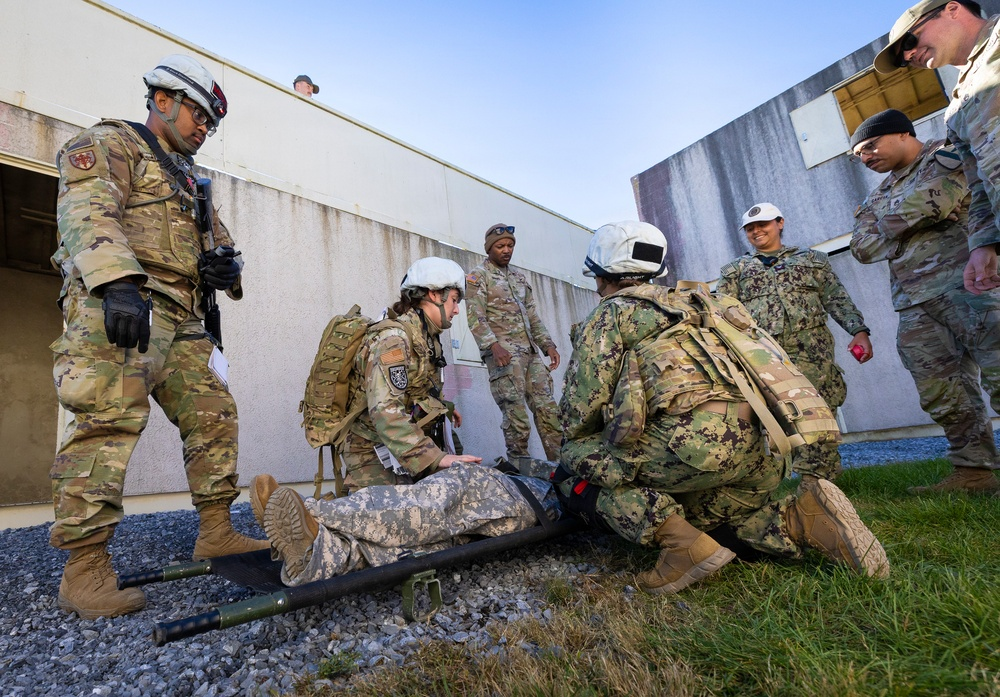

Walter Reed cadre put fourth-year medical students through a field test at Fort Indiantown Gap
A Defense Department still posted Friday morning shows medical students treating a simulated casualty while instructors watch during Operation Bushmaster at Fort Indiantown Gap, Pennsylvania, on Oct. 21. The release says the exercise is the Uniformed Services University capstone: five days of four-hour leadership cycles, with drone noise, prolonged casualty care, and problems drawn from modern conflict. Navy Capt. Sherri Rudinsky, who chairs the military and emergency medicine department, said about 380 faculty and cadre ran it. At least nine Walter Reed staff from the Army, Navy, and Air Force were among them. Army 2nd Lt. Lalah Allen, a medical-surgical nurse on Walter Reed's 4 East, proctored the point-of-injury and casualty-collection lanes and graded tactical combat casualty care.